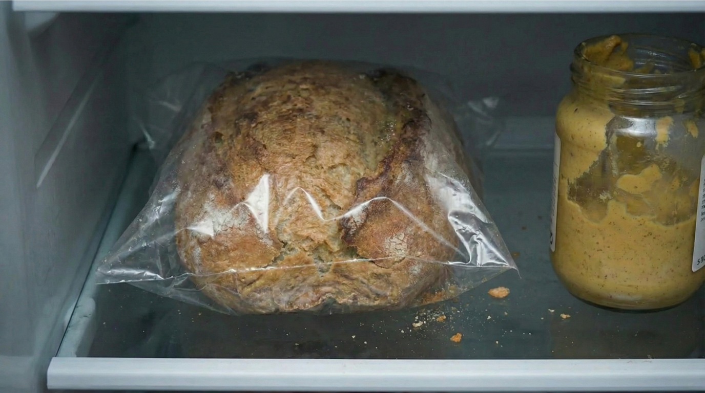
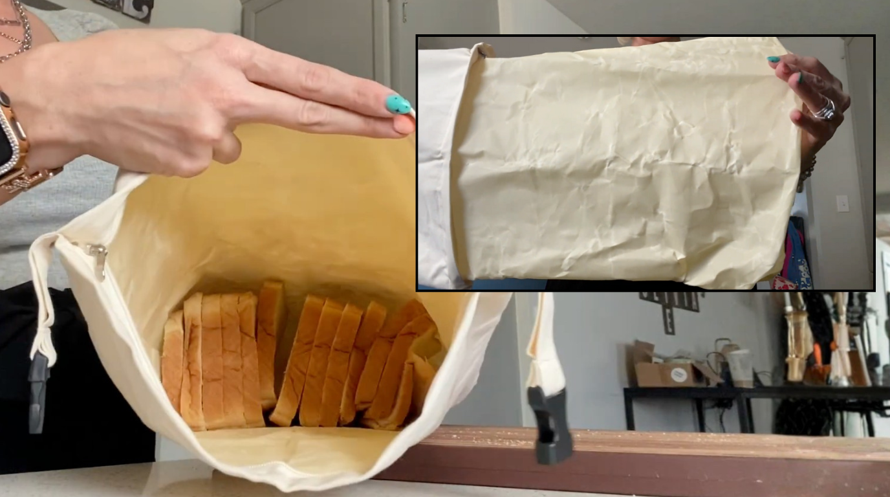

Warum Ihr Brot so schnell schlecht wird – und die jahrhundertealte Lösung, die Plastik in jeder Hinsicht übertrifft

„Ich habe Bienenwachs-Aufbewahrung jahrelang für einen Hype gehalten. Aber als ich endlich eine Bienenwachs-Brottasche ausprobiert habe, die wirklich funktioniert, war ich gleichzeitig begeistert und wütend – weil mir klar wurde, dass ich jahrelang wunderbare Brote mit der falschen Methode ruiniert hatte!" –
Plastik zerstört Ihr Brot auf zwei Arten gleichzeitig
Etwas, das die meisten Menschen nie bemerken...
Plastik hält Brot nicht nur schlecht frisch. Es macht es aktiv schlechter. Auf zwei verschiedene Arten. Gleichzeitig.
Wenn Sie Brot in einer Plastiktüte verschließen, fangen Sie die Feuchtigkeit darin ein.
Brot gibt nach dem Backen natürlich Wasserdampf ab – das ist Teil des Abkühlprozesses, der noch Tage anhält. Die Krume enthält etwa 45 Prozent Wasser. Die Kruste ist trocken. Und die Feuchtigkeit bewegt sich ständig von innen nach außen.

An der Luft entweicht diese Feuchtigkeit problemlos – in Plastik hat sie keinen Ausweg.
Also kondensiert sie. An der Kruste. An der Innenseite der Tüte, wo sich kleine Wassertröpfchen bilden.
Diese Feuchtigkeit durchnässt die Kruste – von der eigenen Luftfeuchtigkeit des Brotes, die in der Plastiktüte gefangen und zurück auf die Oberfläche gedrückt wird.
Die Kruste wird weich, gummiartig und lederig, weil sie langsam von innen ertränkt wird.
Und hier kommt der zweite Schlag: Dieselbe eingeschlossene Feuchtigkeit schafft genau die Bedingungen, unter denen Schimmel gedeiht.
Deshalb schimmelt Brot in Plastik oft schneller als Brot, das völlig unbedeckt liegt. Sie schützen es nicht. Sie fördern das Problem.
Warum der Kühlschrank für Brot das Schlimmste ist

Das hat mich am meisten überrascht.
Wir wurden gelehrt, dass Kälte Lebensmittel konserviert. Und bei den meisten Dingen stimmt das. Aber Brot folgt anderen Regeln.
Es gibt einen chemischen Prozess namens Stärkeretrogradation. Er ist dafür verantwortlich, dass Brot altbacken wird. Wenn Brot nach dem Backen abkühlt, kristallisieren die Stärkemoleküle langsam und drücken Wasser heraus – das erzeugt die harte, trockene Textur, die wir alle kennen und hassen.
Diese Kristallisation läuft am schnellsten zwischen 1,7 °C und 4,4 °C ab.
Genau das ist Ihre Kühlschranktemperatur.
Studien zeigen: Im Kühlschrank gelagertes Brot wird sechsmal schneller altbacken als bei Raumtemperatur gelagertes Brot. Sechsmal. Sie beschleunigen den Alterungsprozess jedes Mal, wenn Sie einen Laib in den Kühlschrank legen.
Der Kühlschrank verhindert zwar Schimmel – aber auf Kosten der Textur. Sie tauschen ein Problem gegen ein anderes.
Was bleibt also? Plastik fördert Schimmel. Der Kühlschrank macht Brot altbacken. Papier und Leinen trocknen es innerhalb eines Tages aus.
Das ist die Falle, in der ich drei Jahre lang steckte und immer wieder Brot eingefroren habe. Ich dachte, das wären meine einzigen Optionen.
Das stimmte nicht.
Was unsere Großmütter wussten – und wir vergessen haben

Die Lösung existiert seit Generationen. Sie ging nur verloren, als Plastik auf den Markt kam: Bienenwachs.
Mit Bienenwachs beschichtetes Tuch ist das, was unsere Großmütter verwendet haben. Was Bäuerinnen und Hausfrauen seit Jahrhunderten wussten. Was Familien, die sich keine Lebensmittelverschwendung leisten konnten, herausgefunden haben – weil sie es mussten.
Es schafft etwas, das weder Plastik noch Papier kann: eine halbdurchlässige Barriere.
Sie lässt Feuchtigkeit langsam entweichen – ungefähr in dem Tempo, in dem Brot sie natürlich abgibt. Nicht zu schnell (wie Leinen). Nicht vollständig eingeschlossen (wie Plastik). Gerade genug, um das Gleichgewicht zu halten.
Die Kruste kann atmen und bleibt knusprig. Die Krume behält genug Feuchtigkeit und bleibt weich. Und ohne den feuchten Treibhauseffekt können sich Schimmelsporen nicht festsetzen.
Dann kam Plastik. Es war billig. Es war praktisch. Und wir haben es übernommen, ohne je zu verstehen, warum die alten Methoden funktionierten.
Wir haben ein ganzes Kapitel des Brot-Wissens übersprungen.
Der Mann, der beschloss, sie richtig herzustellen

Adam Orvix und seine Frau führen ein kleines Familienunternehmen, das echte Bienenwachs-Brottaschen für Brotliebhaber in ganz Europa herstellt – nach dem Rezept seiner Großmutter aus Lyon (Frankreich).
Adam Orvix wuchs in Lyon, Frankreich, auf. Vierte Generation einer Bäckerfamilie. Über hundert Jahre Brottradition.
In der Küche seiner Großmutter war Brotaufbewahrung nie ein Problem. Sie wickelte jeden Laib in Bienenwachstuch, sobald er abgekühlt war. Bis zum nächsten Backtag war das Brot noch gut. Nicht perfekt, aber wirklich genießbar.
Er dachte nie zweimal darüber nach. So funktionierte Brot eben.
Dann zog er nach Deutschland.
Was er sah, verwirrte ihn ehrlich gesagt. Hobbybäcker – talentierte Menschen – die die Hälfte ihrer Brote wegwarfen. Tiefkühler voller Brotscheiben. Menschen, die akzeptierten, dass frisches Sauerteigbrot nur ein oder zwei Tage hält.
„Sie lösten das falsche Problem," schrieb er mir in einer E-Mail. „Die Leute versuchten, Brot immer dichter zu verschließen. Mehr Plastik. Bessere Behälter. Aber dichtes Verschließen ist genau das, was Brot tötet. Sie brauchten das Gegenteil – etwas, das atmet."
Er begann, nach Bienenwachs-Brottaschen zu suchen, die er den Hobbybäckern empfehlen konnte, die er traf.
Das Amazon-Problem

Suchen Sie auf Amazon nach „Bienenwachs Brottasche". Sie finden Dutzende von Optionen. Sie sehen alle ähnlich aus. Natürlich. Bio. Umweltfreundlich. Und günstig – 12 bis 18 €.
Aber die Wahrheit ist: Die meisten davon enthalten kaum Bienenwachs.
Das entdeckte Adam, als er anfing, sie zu testen:
Um diese niedrigen Preise zu erreichen, verwenden Hersteller dünnen Stoff mit einer leicht aufgesprühten Wachsschicht. Manche bestehen größtenteils aus Plastik – mit gerade genug Bienenwachs, um das Wort im Marketing legal verwenden zu dürfen.
Die Beschichtung blättert nach wenigen Anwendungen ab. Der Stoff ist zu dünn, um Feuchtigkeit richtig zu regulieren. Und der Plastikanteil fängt Feuchtigkeit ein und schafft dasselbe Schimmelproblem wie eine Plastiktüte.
Deshalb probieren so viele Menschen „Bienenwachs-Taschen", erleben ihr Versagen und gehen davon aus, dass das gesamte Konzept ein Hype ist.
Das Konzept funktioniert. Die billigen Nachahmungen nicht.
Adam sah, wie Hobbybäcker von minderwertigen Produkten enttäuscht wurden und eine Methode aufgaben, die in seiner Familie vier Generationen lang funktioniert hatte.
Also beschloss er, sie richtig herzustellen.
Was „richtig hergestellt" wirklich bedeutet

Die Orvix-Tasche verwendet dicke, enggewebte Bio-Baumwolle. Nicht den flachen Stoff aus günstigen Alternativen.
Aber hier liegt der eigentliche Unterschied: Eine dicke Schicht reines Bienenwachs, die vom Baumwollstoff getrennt ist. Nicht aufgesprüht oder beschichtet. Sie können sie zum Waschen tatsächlich herausnehmen.
Die billigen Nachahmungen? Diese dünne Wachsschicht ist am Stoff festgeklebt. Sie können sie nicht richtig reinigen. Krümel setzen sich fest. Das Wachs blättert ab. Innerhalb von Wochen haben Sie wieder dieselben Schimmelprobleme.
Bei Orvix trennen Sie den Liner, waschen die Baumwolle normal und setzen alles wieder zusammen. Einfach. Hygienisch. Gebaut, um Jahre zu halten – nicht Wochen.
Ist sie teurer als die Amazon-Nachahmungen? Ja. Sie kostet etwa 29 € statt 15 €.
Aber die Rechnung, die meine Perspektive verändert hat...
Die Rechnung, die ich früher hätte machen sollen

Ob Sie Ihr Brot selbst backen oder beim Bäcker kaufen – die Verschwendung summiert sich schnell.
9 € für ein Sauerteigbrot vom Wochenmarkt. 6 € für einen Laib vom Lieblingsbäcker. Gutes Brot, das Sie bewusst gewählt haben – ohne Konservierungsstoffe, weil es das wert ist.
2 bis 3 € verschwendet pro Woche. 100 bis 150 € pro Jahr. Altbacken geworden, verschimmelt, weggeworfen.
Und das ist nur das Geld. Wenn Sie backen, kommen noch Stunden dazu – Starter füttern, Teig falten, den Ofentrieb beobachten – und am Ende landet alles im Müll wegen eines Aufbewahrungsproblems, von dem Sie nicht wussten, dass Sie es haben.
Und wer versucht, weniger Plastik zu verwenden: Rechnen Sie noch 52 Gefrierbeutel pro Jahr dazu. Nur für Brot.
Die Orvix-Tasche hat sich in etwa drei Monaten amortisiert. Alles danach ist Brot, das ich wirklich esse – statt Brot, das ich wegwerfe.
Die Fragen, die ich hatte!

Ich hatte so viele Fragen, bevor ich bestellte – also wandte ich mich direkt an Adam. Er antwortete noch am selben Tag.
„Riecht das Brot danach nach Honig oder Wachs?"
„Beim ersten Auspacken gibt es einen leichten Honigduft, aber er beeinflusst den Geschmack überhaupt nicht", schrieb Adam zurück. „Der Duft verfliegt innerhalb von ein bis zwei Tagen. Wir haben noch nie eine einzige Beschwerde über Geschmacksübertragung erhalten. Nicht eine."
Er hatte Recht. Nach drei Monaten habe ich nie etwas anderes als Brot geschmeckt.
„Wie reinigt man sie?"
„Hier unterscheiden wir uns grundlegend", erklärte er. „Der Bienenwachs-Liner lässt sich vom Baumwollbeutel trennen. Die Baumwolle waschen Sie ganz normal. Für das Bienenwachs wenden Sie es einfach um und spülen es unter kaltem Wasser mit etwas Seife ab. Die billigen Produkte können das nicht. Ihre Wachsschicht ist so dünn, dass sie das alleine nie überstehen würde. Unsere ist dick genug, um echte Reinigung zu vertragen."
Das dauert etwa eine Minute. Und es ist wirklich sauber. Kein „Abwischen und Hoffen" wie bei den billigen Varianten.
„Wie lange hält sie?"
„Die billigen fallen in Wochen auseinander. Unsere ist auf Langlebigkeit ausgelegt. Bei normaler Pflege sprechen wir von Jahren regelmäßiger Nutzung. Meine Großmutter benutzte ihre, bis der Stoff dünn wurde – und das hat lange gedauert."
Nach einigen weiteren E-Mails erzählte ich Adam, wie sehr das alles für mich verändert hatte. Wie ich mir wünschte, ich hätte es Jahre früher gefunden. Wie ich es mit anderen Bäckern teilen wollte, die in derselben Gefrierfach-Falle stecken.
Er überraschte mich.
„Lass uns etwas für deine Leser tun", sagte er. „Für die ersten 100 Personen, die über deinen Artikel kommen, machen wir ein zeitlich begrenztes Angebot von bis zu 71 % Rabatt."
Ich dachte, er scherzt. „Ich hätte lieber zwei Taschen in einer Küche, die benutzt werden", sagte er, „als eine Tasche, die im Lager steht."
Ich weiß nicht, wie lange dieses Angebot noch gilt – aber wenn der Button unten funktioniert, können Sie es noch nutzen.
Zeitlich begrenztes Angebot für die ersten 100 Leser. Bis zu 71 % Rabatt.
VERFÜGBARKEIT PRÜFEN 👈Was andere Brotliebhaber sagen:
Ein echter Gamechanger!
Ich backe seit 8 Jahren Sauerteigbrot und habe jede Aufbewahrungsmethode ausprobiert. Brotboxen, Leinenbeutel, Plastik, den Kühlschrank, die Tiefkühltruhe... Die Orvix-Tasche ist die erste, die wirklich funktioniert. Brot am fünften Tag mit einer Kruste, die noch knackt. Ich dachte nicht, dass das möglich ist.

Absolute Empfehlung
Ich habe die günstigen Bienenwachs-Taschen von Amazon ausprobiert – rausgeschmissenes Geld. Die Orvix-Tasche ist spürbar dicker und schwerer. Drei Monate tägliche Nutzung und sie sieht noch aus wie neu. Machen Sie nicht meinen Fehler und kaufen Sie direkt die Orvix-Tasche.

Kein Ziegelstein mehr
Meine selbst gebackenen Brote wurden ohne Einfrieren immer bis Mittwoch zum Ziegelstein. Jetzt hält das Brot mit Orvix bis zum letzten Tag (5 Tage), wenn wir es aufgegessen haben. Wer gutes Brot liebt, braucht das einfach.
Tolles Produkt!
Ich habe sie schon mehrfach verschenkt, weil sie so gut funktionieren! Mein frisch gebackenes Brot hält viel länger, bleibt frisch und der ganze Laib passt problemlos rein. Super einfach zu öffnen und zu verschließen. Das perfekte Geschenk – aber kaufen Sie gleich eine extra für sich selbst!
Zeitlich begrenztes Angebot für die ersten 100 Leser. Bis zu 71 % Rabatt.
VERFÜGBARKEIT PRÜFEN 👈